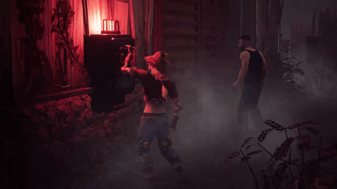

5 Reglas Básicas para Sobrevivir en la Niebla
Comenzar en Dead by Daylight puede ser abrumador. Entre el radio de terror del Asesino y la presión de reparar generadores, dominar lo básico es fundamental para escapar:
Controla la cámara: Mantén la visión 360° mientras reparas para reaccionar a tiempo.
Gestiona tus marcas de arañazos: Correr deja marcas de arañazos visibles únicamente para el Asesino. Camina o agáchate cuando no estés en persecución directa o al intentar romper la línea de visión en estructuras cerradas.
Gana tiempo en los pallets: No tires las maderas antes de tiempo; aprovéchalas para romper la línea de visión.
Monitorea los estados de tus compañeros: Mantén un ojo en la interfaz lateral. Si un compañero entra en persecución, aprovecha ese tiempo seguro para reparar generadores de forma agresiva.
Prioriza la reparación de generadores centrales: Reparar primero los generadores situados en el medio del mapa evita que el asesino pueda patrullar fácilmente los últimos tres generadores (3-gen) al final de la partida.